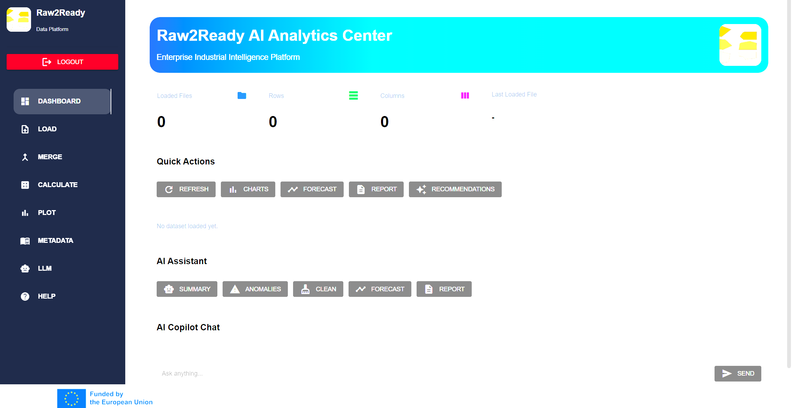
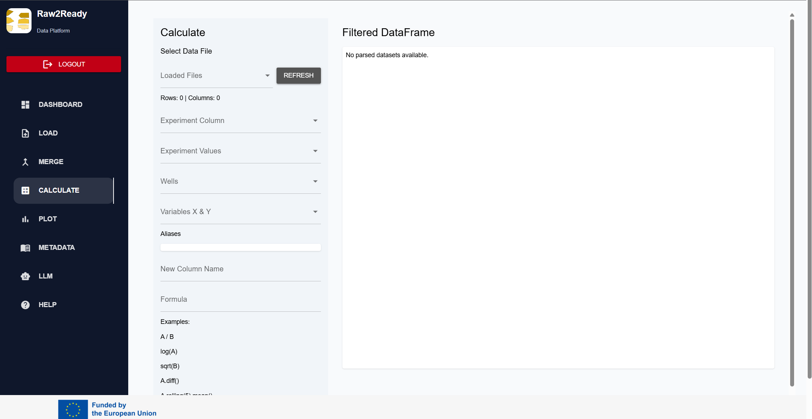
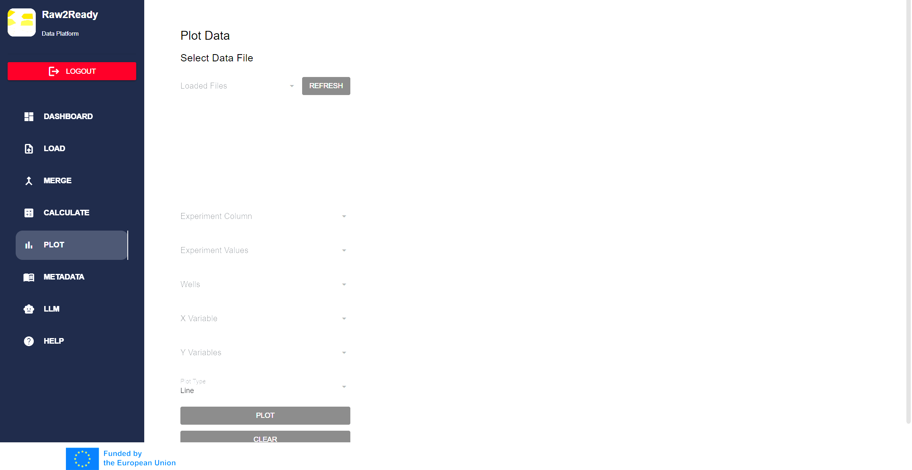

Load & Harmonize Data
Import heterogeneous datasets from Sartorius bioreactors, BioLectorXT systems, gas analyzers, CSV and Excel files. Automatically validate, clean and standardize experimental measurements into a unified AI-ready format.
Raw2Ready is an open-source Python platform that transforms heterogeneous fermentation datasets into structured, standardized and AI-ready knowledge. It combines data harmonization, visualization, statistical analysis, semantic metadata, scientific literature exploration, BacDive integration and collaborative AI agents within a single web-based environment.

Import heterogeneous datasets from Sartorius bioreactors, BioLectorXT systems, gas analyzers, CSV and Excel files. Automatically validate, clean and standardize experimental measurements into a unified AI-ready format.

Merge asynchronous datasets originating from different fermentation devices using intelligent nearest-neighbor datetime alignment and reference datasets.

Define mathematical expressions dynamically using dataset columns and constants. Generate process variables, analytical indicators and custom fermentation metrics without modifying source code.

Produce publication-quality figures, interactive dashboards, descriptive statistics, correlation analysis, clustering, principal component analysis and advanced exploratory analytics directly inside Raw2Ready.

Describe fermentation experiments using the Minimum Information Framework for Fermentation Experiments (MIFE), enabling standardized metadata, reproducibility and semantic interoperability.
Raw2Ready combines experimental data management, statistical analysis, semantic annotation and artificial intelligence into a unified platform.
Import heterogeneous fermentation datasets.
Synchronize multiple instruments automatically.
Generate derived variables interactively.
Interactive publication-quality plots.
Explore microbial strain knowledge.
Search and summarize scientific publications.
Collaborative multi-agent reasoning over datasets.
Shared memory across all intelligent agents.
Export datasets, figures and reports.
Modern web-based graphical user interface.
Raw2Ready combines harmonized datasets, MIFE metadata, BacDive microbial knowledge, scientific literature and collaborative AI agents into a single intelligent decision-support platform for industrial biotechnology.
Explore every component of Raw2Ready through the complete documentation.
| Documentation | Description |
|---|---|
| Overview | Platform architecture and capabilities. |
| Installation | Installation and setup guide. |
| Workflow | Complete processing pipeline. |
| Load Module | Import heterogeneous datasets. |
| Merge Module | Synchronize multiple instruments. |
| Calculate Module | Create derived variables. |
| Plot Module | Create interactive figures. |
| Statistics | Statistical analyses and machine learning. |
| Metadata | MIFE semantic annotation. |
| BacDive Explorer | Microbial knowledge integration. |
| Literature Reviewer | Scientific publication retrieval. |
| Multi-Agent AI | Collaborative AI reasoning framework. |
| FAQ | Frequently asked questions. |
Raw2Ready is developed within the BIOINDUSTRY4.0 project and is openly available through GitLab.